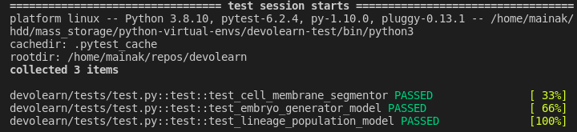
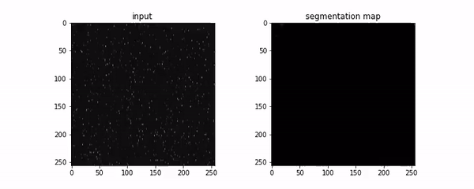
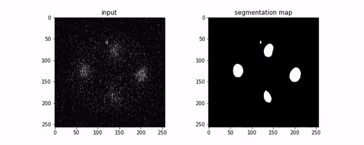

GSoC - Coding Period Week 6
Work Done This Week (July 12th to July 19th)
- Swapped out the model for the Cell membrane segmentation with the upgraded model in DevoLearn's repository, ran tests locally before pushing because Travis has been discontinued. (Link to commit)

- Renamed the
embryo_segmentorpackage tocell_membrane_segmentor. The reason for this renaming is to avoid naming conflicts when new segmentation models are added. (Link to commit)- Old syntax -
from devolearn import embryo_segmentor - New syntax -
from devolearn import cell_membrane_segmentor
- Old syntax -
- Integrated the new nucleus segmentation model into the library (Link to commit)
- Wrote the necessary functions to run inference, on CPU and GPU.
- Made additions to the testing script to accomodate this additional model.
- Steps for usage:
from devolearn import cell_nucleus_segmentorsegmentor = cell_nucleus_segmentor(device='cuda')pred = segmentor.predict(image_path = "input_image.png")plt.imshow(pred)
- Inference Examples:
- Input image with Varying Z axis -

- Input image with Varying Z axis -
- Inputs varying through time -

Planned:
- Build a GUI for all DevoLearn models and host them online.
- Look into ways of running bulk inference using the web-GUI.
- Move from Travis CI to Github Actions.